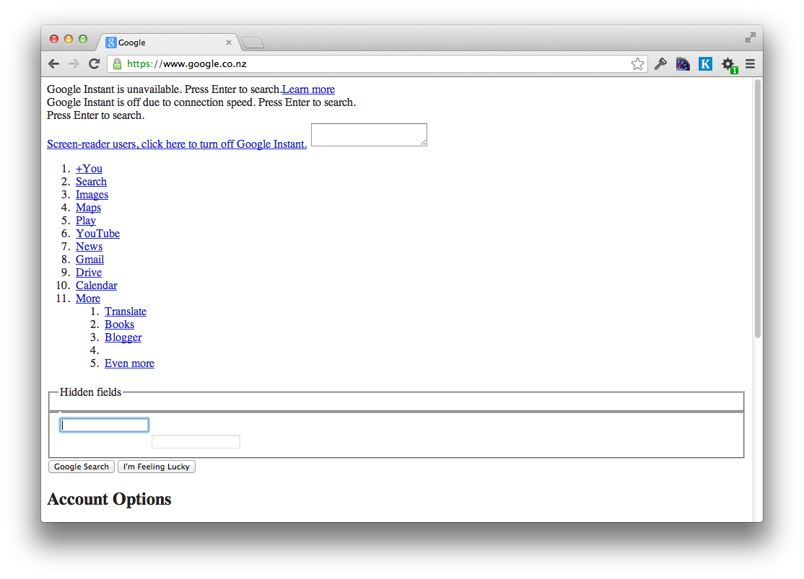
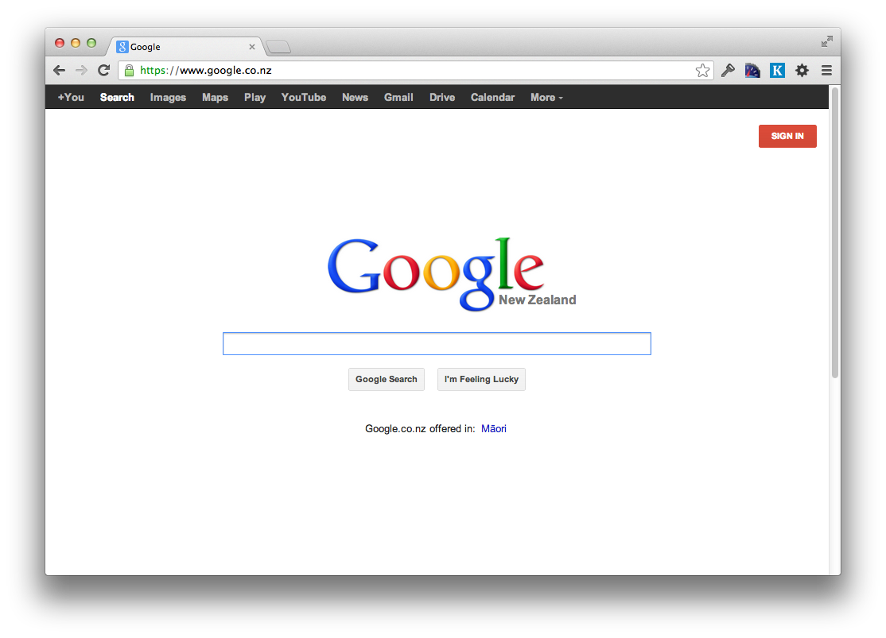
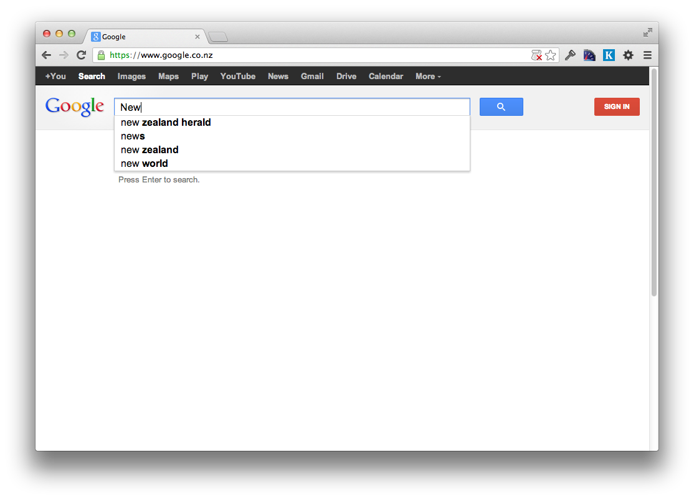

Web Development Taster
Building Websites with HTML & CSS
tiny.cc/webtaster
A web page is made of three main languages

HTML is the markup language

CSS is the style sheet language

JavaScript is the programming language

Workshop Mission:
HTML & CSS
What We’re Making
See the Pen Otter Page Layout Demo by Gather Workshops (@gatherworkshops) on CodePen.
We’ll use basic-level HTML and CSS to create this masterpiece!

Intro: Complete!
Great, now it’s time to start coding…
Loading...